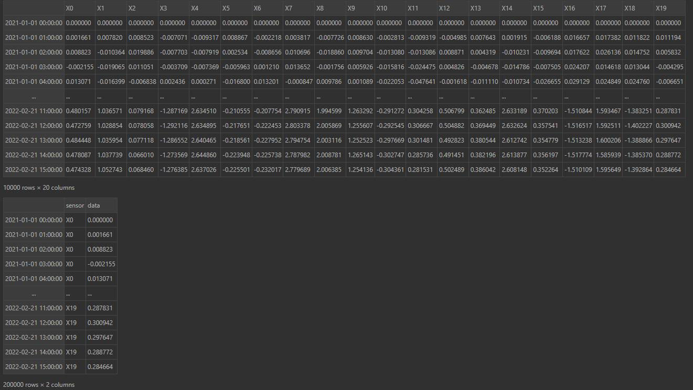

📖 Guidelines
Set up a clean virtual environnement
Linux setting:
pip install virtualenv
virtualenv myenv
source myenv/bin/activate
Windows setting:
pip install virtual env
virtualenv myenv
.\myenv\Scripts\activate
Install the library (restricted access)
You can install it by a direct downloading from PyPi using the command
pip install tadkit
You can installing it from it github sources by launching the following command
pip install git+https://github.com/IRT-SystemX/tadkit/
If you got the source code as a zip file, you can install the library from the root directory of the archive by typing :
pip install .
🎮 Basic TADkit: run anomaly detection Confiance methods on your data
TADkit’s primary function is to allow you to test several Confiance.ai anomaly detection methods on your dataset at the same time.
The simplest way to use TADkit is to run the highlights notebook, then plug in your data and tune the targetted anomaly detection methods. The widgets allow to choose methods that are compatible with your data type and calibrate methods with sliders and buttons.
A more general basic procedure for using TADkit is the following:
Prepare your
data: it should be apandas.DataFramewith timestamps as index, and be organised like one of the types in the following picture (top:dataframe_type="synchronous", bottom:dataframe_type="asynchronous"): Load data and dataframe_type into the default
PandasFormalizerformalizer, e.g.:
from tadkit.catalog.formalizers import PandasFormalizer
my_formalizer = PandasFormalizer(data_df=data, dataframe_type="synchronous")
Select your target data for training learners onto (e.g. data whose behaviour you want to learn)retrieve your machine-learning formatted query like so:
base_query = formalizer.default_query()
X = formalizer.formalize(**base_query)
base_query["target_period"] = (data.index[0], cut1)
X_train = formalizer.formalize(**base_query)
Using the PandasFormalizer, the queries have four main attribute for defining your target data: you can change the time period of interest with target_period, the columns/sensors of interest with target_space, if you want resampling or not with resampling and the resampling resolution resampling_resolution if needed.
4) Retrieve the learners that match the type of data you’re interested in (e.g. multidimensional or unidimensional, …) like so:
from tadkit.catalog.learners import installed_learner_classes
from tadkit.catalog.learners.match_formalizer_learners import match_formalizer_learners
matching_available_learners = match_formalizer_learners(formalizer, installed_learner_classes)
Instantiate your models:
models = {learner_class_name: available_learner() for learner_class_name, available_learner in matching_available_learners.items()}
and if necessary change the default parameters looking at available_learner.params_description. You can add your own model here if they are compliant with the TADLearner interface.
Train and test your models on the target data:
for name, model in models.items():
model.fit(X_train)
y_score = -model.score_samples(X)
If instead of anomaly scores you want to predict labels (anomaly / no anomaly), you can use model.predict instead of model.score_samples.
TADkit Interfaces and Confiance methods catalog
TADkit Formalizer interface for formatting your data into anomaly detection methods
TADkit uses a Formalizer abstract class that makes the connection between data and models, and a simple instanciation of the class: the PandasFormalizer introduced above that should be used for basic tasks, and a specific Formalizer should be crafted for more complex task or when a specific data formatting is required by a learning method of your choice.
The following concepts have been incorporated into the API: a Formalizer has the property or attribute available_properties, a list of strings that are tags and allow automatic matching of compatible a Formalizer and a TADLearner. It also has the property or attribute query_description, which describes the parameters of the formalize method. This description has the following form:
{
<first_param_name>: {
'description': <a str describing the parameter>,
'family': <a str tag allowing classification of parameters, e.g. 'time', 'space', 'preprocessing'>
'value_type': <a str tag of the type of value of the parameters, e.g. 'interval_element', 'set_element', 'subset'>
... # other keys, specifics to the value_type, describing possibles values
},
... # other parameters
}
The formalize method takes a query formatted after query_description and returns the corresponding query data. The structure of the property and parameter descriptions is fixed, but there is no canonical list of tags and value_type yet.
TADkit Anomaly Detection Interface and Confiance methods
TADkit uses an abstract class TADLearner for formatting anomaly detection methods API.
This interface requires implementing .fit(X) for calibrating the method, .score_samples(X) for producing anomaly scores and .predict(X) for producing anomaly labels (1 for normal, -1 for abnormal). A TADLearner must have a required_properties list attribute for ensuring compatibility with the Formalizer, that is elements in the list must appear in the Formalizer’s available_properties in order for the two to be a match. Lastly a TADLearner must include a params_description attribute, a dictionary describing the method’s parameters.
TADkit offers a catalog of Confiance methods (as well as standard methods) to use in an anomaly detection procedure.
Currently integrated in TADkit are the following autonomous libraries in TADLearner format:
CNNDRAD: a two-step method for anomaly detection using deep 1D-CNN architectures: use pretext tasks to learn a representation of the data, then produce reconstruction score.
TDAAD: topological data embedding combined with a minimum covariance determinant analysis of the resulting vectorization.
KCPD: anomaly detection from a Kernel Change Point analysis.
SBAD: counterfactual analysis based unsupervised anomaly detection and diagnosis: compute a multivariate time series that is as close as possible to the input time series, while lowering the global anomaly score.
These libraries are not opensource yet. They can be found in the confiance.ai catalog but the download is restricted to users with specific access
CNNDRAD: https://catalog.confiance.ai/records/af2ab-hw426
TDAAD: https://catalog.confiance.ai/records/ve158-h4h60
KCPD: https://catalog.confiance.ai/records/6atzy-3yn05
SBAD : https://catalog.confiance.ai/records/npea5-hhw40
In addition, to simplify the making of one own’s TADLearner, TADkit has the following tools:
a
sklearn_tadlearner_factoryclass factory (function returning a class) wrapping a sklearn model into a learner.a
decomposable_tadlearner_factoryclass factory creating a learner pipeline from a preprocessor and a learner.
They are used in the univariate anomaly detection method notebook for demonstration purposes.
Structure of the project
The tadkit package
The package is the tadkit folder, broken down into two parts, tadkit/base containing the API and tadkit/utils containing the wrappers and composers. The tadkit/catalog folder contains wraper for external anomaly detectors and a basic pandas Formalizer. The tadkit/active folder contains the classes for active learning functionalities.
Example
The examples\ornstein_uhlenbeck_anomaly.ipynb notebook contains ilustrations of the basic use of tadkit’s main features. The data used are simulations of an Ornstein Uhlenbeck process perturbed by a few anomalies.
The purpose of this example is to help understand the use of the API and helpers and to serve as a system test.
Demo Notebook
The demonstrators\air_liquide\airliquide_demonstrator.ipynb demonstrator implements the UC air_liquide formalizer and a minimal version of the demonstrator diagram.
Unit tests
These are located in the tests folder and follow the library folder tree. Tests are performed in the pytest framework and can be run with the following command
pytest <tadkit_dir>
Document generation
To regenerate the documentation, rerun the following commands from the project root, adapting if necessary:
pip install -r docs/docs_requirements.txt -r requirements.txt
sphinx-apidoc -o docs/source/generated tadkit
sphinx-build -M html docs/source docs/build -W --keep-going